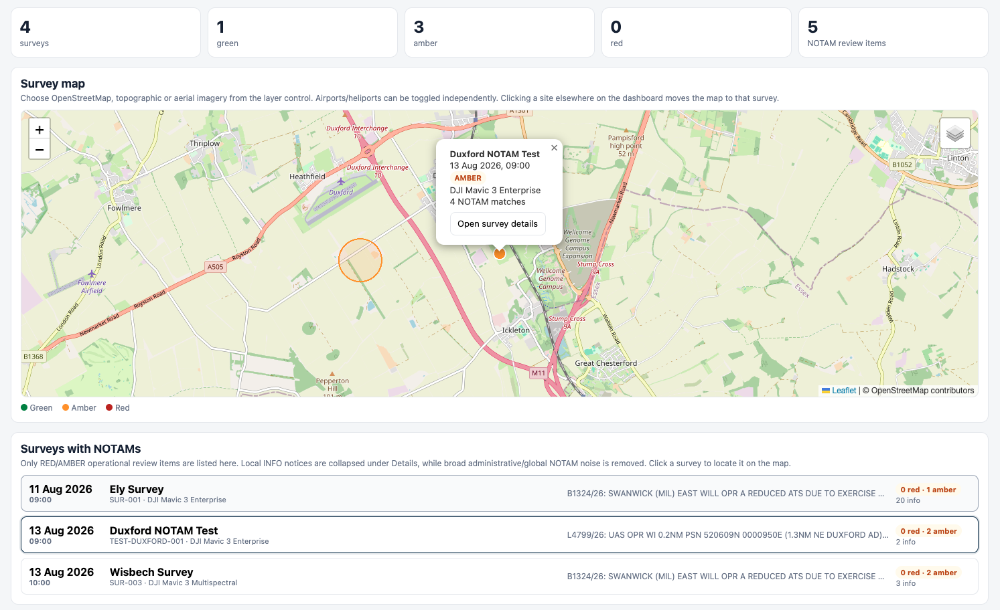
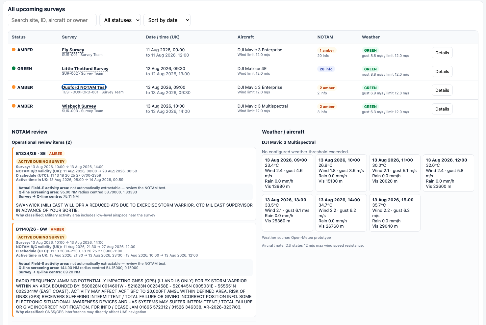

Survey NOTAM & weather dashboard
An automated pre-flight screen for a rolling survey schedule. It reads planned jobs and aircraft limits from a spreadsheet, screens the NATS UK NOTAM feed and hourly forecast against each site’s position, altitude and time window, and renders a self-contained dashboard with a traffic-light status per survey. A failed feed reports as data unknown, never green.
PythonNATS PIB XMLOpen-MeteoLeafletopenpyxl

